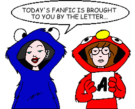
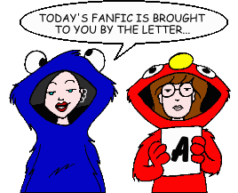

Fan Fiction
"A" by Author

Fan Fiction
"A" by Author

|
Authors: If you no longer wish for any of your stories to be posted, please send e-mail to fanfic@lawndale.net and I will remove them at once. |
| abe |
| A Day on the Sick, Sad Job Category: Series & Multi-Part Stories (Past & Future) Daria and Jane have recently been hired at "Sick, Sad World." Let the madness begin. |
| ACLI |
| Cat Fights Category: Miscellaneous Daria finds a new enemy in a new girl as they vie for Jane's friendships, Trent's attention, and the love of a new mystery man. |
| Empire Strikes Back Records Category: Crossovers & Parodies A parody of the film "Empire Records," with a little "Star Wars" thrown into the mix. |
| Acrobat (aglaia41@aol.com) |
| Brownstone, Green Eyed [Artwork] Category: Past & Future After Daria barely survives her first semester in a college dorm, she and Jane move into one floor of a house where the members of Mystik Spiral have already taken up residence. |
| The Quiz Kids are Alright Category: School Situations When Ms. Li sells Lawndale out again, this time to game-show recruiters, Daria accidentally lands a spot on "Quiz Kids 2000." |
| Three Prommed Attack Category: School Situations Prom season at Lawndale! Quinn conducts a date audit, Jane gets some crafty ideas, and Daria becomes a conscientious objector. |
| Three Prommed Attack 2: Atomic Prom Category: School Situations The sequel to "Three Prommed Attack." At the Lawndale Prom, the J's have hooked up with the Fashion Club, Quinn is stuck with Upchuck, Ms. Li's on a security rampage, and the decor is unspeakable. Will they get through the Prom alive? |
| Adam Johnson |
| Daria Gets a Job Category: Miscellaneous Daria gets a job working as a waitress (which she hates) in order to buy her parents an anniversary gift (which she's forced to do). |
| Troubles Category: Romance The dance is here, everyone is breaking up, and Jane has something planned for her "friend" Daria. |
| Admonisher |
| Band Aid Category: School Situations When Daria and Jane join band (to get out of Ms. Morris' hated gym class), they expected a break from corruption. Boy, were they wrong. With Quinn and Co. involved, the school in chaos, and a rich grant up for grabs, Daria finds herself wrapped up in a showdown between politics and greed. |
| Daria's Christmas Carol Category: Holidays A reinterpretation of the Dickens classic that finds Daria at odds with her family, her friends, and the very spirit of Christmas. Can one night actually change the way Daria thinks? And will it be for the better? |
| I, Upchuck Category: Miscellaneous The memoirs of a fledgling celebrity, in his own words. |
| The Last Word Category: Miscellaneous A telephone conversation between Aunt Amy and "her favorite niece." An unconventional finish. Followed by a short essay by the author. |
| Love At First Slight [Artwork] Category: Miscellaneous Love! Passion! Hot torrid romance! Well... no. But Daria does smile. Trent gets a date -- and it ain't Daria! Can Daria salvage the situation without acknowledging a single emotion? God, she hopes so. |
| A Mother in Spite of Herself Category: Miscellaneous A poignant tale of mother/daughter relationships, as Daria attempts to get published and Helen is torn between her family and her job. |
| Science Fare [Artwork] Category: School Situations Witness the "Upchuck 2000!" Watch as Kevin tackles relativity! Marvel at the wonders of the "Perfuminator!" Tremble in fear at "The Thing from Trent's Closet!!!" And see what happens when the Fashion Club takes over the annual Lawndale Science Fair. You've been warned! |
| A Stitch in Time [Artwork] Category: Miscellaneous A dark fantasia of romance and suspense, this novella is set in renowned 'shipper author Diane Long's continuum, carrying Daria and Trent six years beyond the events of Undone and deep into a startling, possibly tragic future. Note: This story includes content (language, violence, or sexual situations) that may not be appropriate for some readers. |
| Stranger Than Fiction [Artwork] Category: Crossovers & Parodies While investigating a case involving a seemingly deranged man, FBI agents Fox Mulder and Dana Scully find their perception of reality severely challenged when they're somehow transported into the cartoon world of Lawndale. There, they team up with a reluctant Daria and her friends to help set things right before both universes are destroyed. An epic crossover with "The X-Files" that proves the truth really is out there. (Or in there. Whatever.) |
| Adrienne (AANIKITA@cs.com) |
| Bad Day Category: Past & Future Daria's been having a lot of bad days lately... and Tom just doesn't understand. |
| Christmas Eve at the Lanes Category: Holidays Her sister's pregnant. Her mother isn't talking to her. She and her best friend are having problems. And the only person Daria can talk to is the person with whom she's stuck in a snow storm: Trent. |
| Crush Category: Past & Future A future look at Stacy in college. |
| Al Banffte (albanffte@hotmail.com) |
| Enter Al Banffte Category: Miscellaneous When a strange new boy arrives in Lawndale, strange things begin to happen. Who or what is this new boy, and why is he here? |
| Alan Markowitz (babette6@pipeline.com) |
| Sexual Education Category: School Situations Daria and Jane take a sexual education class taught by Mr. DeMartino. |
| The Alchemist (smw17_cu@yahoo.com) |
| Electronic Alchemy Category: Series & Multi-Part Stories (Miscellaneous) A series of stories set in lieu of the official Season 5, continuing the lives of the characters post-"Is It Fall Yet?". |
| Jane on the Side Category: Alternate History Seemingly minor events can sometimes have major consequences, as we see here when the Morgendorffers' move from Highland to Lawndale is delayed by one day. The new and the familiar combine to show us how Daria's life might have unfolded had that one minor difference prevented her from meeting a cynical, artistic loner named Jane Lane. |
| Quinn at College Category: Series & Multi-Part Stories (Past & Future) Quinn discovered her long-unused intelligence in "Is It Fall Yet?" and Season 5. Find out how she applies it to college life and learning. |
| Alexander Lamar Eldritch (blackstarwolf@yahoo.com) |
| Purple Eyes and Other Interesting Anomalies Category: Miscellaneous An essay that explains the bizzare characteristics of the characters in the author's stories. |
| Raven vs. Ms. Barch Category: School Situations Ms. Barch says the wrong thing to Raven, leading to a showdown. |
| What's With Their Eyes? Category: School Situations The story of Raven and Rebecca's first day of school at Lawndale High. |
| Alexandrea Thomas (angelgirl1774@hotmail.com) |
| Trent's Romance Category: Romance Trent falls in love with Daria (you saw it coming!). Set to the Perfect Circle song "Blue." |
| Alexandria (marc_smith@ameritech.net) |
| A Night You Should Remember Category: Romance Daria spends the night at Jane's and Trent comes home drunk. Misunderstandings ensue. |
| Aloysius (frankieboy122@hotmail.com) |
| Dreams and Reality Category: Miscellaneous The planet has been overrun by zombies. In Lawndale, Daria Morgendorffer waits for help... from fanfiction heroes. |
| Fashion Angels Category: Crossovers & Parodies The Fashion Club, now working as Charlie's Angels, have met their share of challenges in the past. Now, they face their most challenging assignment: babysitting a cat known as Toonces. |
| Scarlett the Fairy Category: Series & Multi-Part Stories (Sci-Fi, Fantasy & Horror) The wild and wacky (and often naughty) adventures of Scarlett the Fairy. |
| Amanda Summers (summer@interlabs.bradley.edu) |
| Dated Category: Romance Trent plays a gig and Jane, Jesse, and Daria attend... and find out that the concept of hooking up isn't so bad after all. |
| Amber "Sunny" Howard (Awakening20@queendom.com) |
| Night of the Living Lawndale Category: Miscellaneous As darkness falls over Lawndale, how do our favorite characters deal with life in a town so psychologically screwed? |
| Ana Sturtz (ana_sturtz@email.com) |
| Blind Date Category: Miscellaneous Daria goes on a blind date with a friend of Jane's. |
| Anachronism Girl (anachronism.girl@gmail.com) |
| Night Holds the Key Category: Romance Daria and Trent have a sort-of late night encounter. A prequel (of sorts) to Roger E. Moore's "April is the Cruelest Month." |
| Anastasia (samsjuliet@yahoo.com) |
| May the Detachment Be With You Category: Miscellaneous Trent asks Daria to sing in a "musical comedy contest" with Mystik Spiral, but she finds herself in over her head when she discovers the content of her performance: a "Weird Al" Yankovic song from a galaxy far, far away... |
| Anastasia Hunt (y2ktoilet@yahoo.com) |
| Compulsion Category: Romance Brittany has another party and this time Trent comes. |
| Anay Lewis (NewSawMill@aol.com) |
| Here Now... Category: Miscellaneous The author's take on the events between "Dye! Dye! My Darling" and "Is It Fall Yet?" The first dates, indescretioins and some mounting tensions. |
| Something to Note Category: Past & Future An interview with Daria Morgendorffer, 30+ years into the future. |
| Andrea Griva (AGriva@altavista.com) |
| Crossing the Line Category: Romance Jane goes too far with her Yenta act and Daria lashes out in front of all of Lawndale. |
| Angel Baby Love (grungebetty@alloymail.com) |
| Longing Category: Romance Jane tries to set Daria and Trent up. |
| Angel ODing (Pale_September_Angel@yahoo.com) |
| A Very Fine Lane Category: Romance Daria and Trent get together. Simple, eh? Not on your life! |
| angel_in_black (Bambolia1@juno.com) |
| You Know You're Right Category: Miscellaneous A story about Trent and his past, a long lost love, and a Rock Star God. They are all connected in one of the saddest stories of the 1990s. |
| Angelinhel (kckli@yahoo.com) |
| 9-14-04 Category: Miscellaneous In response to Roger E. Moore's PPMB Iron Chef: Your challenge is to write a short fanfic telling what one or more of the major characters in "Daria" are doing today, September 2004. |
| An Angel Named Mary Sue Category: Sci-Fi, Fantasy & Horror Daria is given the chance to see the world around her a little better. |
| Aw, Nuts Category: Miscellaneous A peek into Jake's never-ending war with the squirrel population of Lawndale. Written for Roger E. Moore. |
| A Broken Night Category: Alternate History An AU story set during "Is It Fall Yet?" in response to Ned's Iron Chef Challenge to write a Daria/DeMartino shipper. Probably not what you're expecting... |
| Crimson Sunset Category: Miscellaneous A little Stacy-centric ficlet. |
| Guilty Pleasures Category: Miscellaneous A PPMB "Iron Chef" challenge ficlet, in which one or more Lawndale characters are shown secretly indulging in a "guilty pleasure" (and being very out of character doing it). |
| Jane's Theme Category: Miscellaneous In response to Manha Manha's Iron Chef: Why is Jane's favorite song a sappy 70's love song? |
| More Guilty Pleasures Category: Miscellaneous Another PPMB "Iron Chef" challenge ficlet in which one or more Lawndale characters are shown secretly indulging in a "guilty pleasure" (and being very out of character doing it). Three for the price of one in this sequel! |
| Padded Walls Category: Miscellaneous Ever wonder why Quinn can't remember Jaime's name? Why she *really* started calling Daria her cousin? Why Tiffany is so slow? Stacy so suggestible? Or the truth behind why Quinn loves to have guys at her feet? |
| Padded Walls 2 Category: Miscellaneous Daria hits her head in the "Boxing Daria" car accident, instead of just skidding to the side of the road, and when she comes to, things have changed. A PPMB "Iron Chef" challenge fanfic, and a sequel to the author's "Padded Walls" fanfic. |
| Reflections in the Hood of a Car Category: Miscellaneous Tom reflects on his role in "the triangle" after all is said and done. |
| Remember Me Category: Miscellaneous An Iron Chef ficlet. Quinn's worst nightmare. |
| Run, Jane, Run Category: Past & Future Why Jane likes to run. A ficlet. |
| Second Place Category: Past & Future Daria watches as Jane accepts second place. |
| Structure Category: Past & Future "Mad Dog" Morgendorffer decides little Jakey's fate. |
| Unrequited Love Category: Romance Three ficlets in response to a PPMB "Iron Chef" challenge to write a short story about one Daria character's unrequited love for another. (Exceptions: no Daria/Trent or Quinn/David, which have been done to death.) |
| Write Where It Hurts: Alternate Story Category: Miscellaneous In "Write Where It Hurts," Helen tells Daria to write something honest. This time, she writes something besides a story about her family in the future. Something with even more personal overtones... |
| The Angst Guy (theangstguy@yahoo.com) |
| (Go Ahead and) Dance (*) Category: Miscellaneous These are the lyrics to one of Trent Lane's better-known songs, written after Mystik Spiral's move to Boston (shortly after Jane began college there). |
| The African Queen (*) Category: Crossovers & Parodies Fourteen heavily armed men went hunting for her in the jungle. It was not a fair fight. An entry in one of the PPMB's "Iron Chef" contests. |
| After the End (*) Category: Alternate History Jane eventually forgave Daria for kissing Tom... but what if she hadn't? What if the "freakin' friends" were no more? |
| Almost Strangers in the Night (*) Category: Romance A short Quinn/Upchuck shipper-fic. No, seriously. |
| The Alternate History Teacher (*) Category: Miscellaneous Born out of her time, a new teacher comes to Lawndale High with lessons that change the lives of her students--and change her own life as well. |
| Always Beside You (*) Category: Sci-Fi, Fantasy & Horror Two siblings meet late in life to share dreadful secrets, but someone else is with them, too: an old friend who is no longer among the living. This alternate-universe tale spins off from events in the episode, "Fair Enough," carrying them in a nightmarish direction. |
| The Amazing Adventures of D-Day and the Mighty Jane! (*) Category: Sci-Fi, Fantasy & Horror The unstoppable D-Day Morgendorffer and The Mighty Jane Lane face their greatest challenge yet in this alternate-universe tale of superheroes, supervillains, cliffhangers, and sudden death! |
| And All Was Right With the World (*) Category: Past & Future A soldier comes home, but the war has never left him. |
| And I on the Opposite Shore Will Be (*) Category: Alternate History Jane Lane makes a stunning confession to her closest friend--but is it a secret she should have kept to herself? A tale of how "The Lawndale File" could have gone. |
| And When Your Heart Begins to Bleed (*) Category: Miscellaneous Daria, Jane, Quinn, and other Lawndale High School students face a nightmarish twenty-four hours in this multichapter tale, a response to a PPMB Iron Chef challenge to employ a list of never-before-seen themes in "Daria" fanfic. |
| Another Damn Mary Sue Fanfic (*) Category: Miscellaneous The author writes a story in which he meets Daria. The cause of literature is hurled back a thousand years. |
| The Antisocial Climber (*) Category: Miscellaneous A wheelchair-bound football legend looks back on his heroic career--and the two people who made his comeback possible. |
| Anything for Jane (*) Category: Holidays A Mother's Day fanfic about a girl who discovers her favorite aunt was more important in her life than she had imagined. |
| April Is the Cruelest Month [Artwork] (*) Category: Past & Future Two junior undergraduates from Boston take their medical and emotional problems with them during spring break in the Rockies. Note: This story includes content (language, violence, or sexual situations) that may not be appropriate for some readers. |
| The Art of Seeing [Artwork] (*) Category: Alternate History When Daria Morgendorffer meets Jane Lane in an alternate universe, they discover things that the eye will never find. An "Iron Chef Challenge" fanfic. |
| As Many Worlds as There Are Artists (*) Category: Alternate History Daria and Jane contemplate their future after high school, while Trent and Mystik Spiral hang out in the basement--but an artistic element has changed in the Lane household, in this alternate-world tale. |
| As She Remembered It in the Long Years After (*) Category: Alternate History An alternate-universe love that never spoke its name finally does... too late. |
| Aunt Kara (*) Category: Miscellaneous When Helen Morgendorffer's youngest sister (Kara, the "wild one" from Hollywood) comes to visit, guess which member of the family gets the biggest surprise! |
| The Awakening (*) Category: Miscellaneous A teenager girl makes a slight change in her diet--and discovers that the real world is not. |
| Backhanded Remarks (*) Category: Miscellaneous Sandi Griffin courts disaster at the French Open tennis tournament, and nets a ton of trouble. |
| The Ballad of Stacy Rowe (*) Category: Crossovers & Parodies A musical spin-off from a much better fanfic by E. A. Smith ("Good Intentions"), this bluegrass-music ballad works best if sung to the tune of Grandpa Jones's famous "Mountain Dew," with banjo accompaniment. |
| The Boy with Sea Green Eyes (*) Category: Alternate History Of all the "what ifs" of "Daria," the most intriguing pivot around Tom Sloane's appearance in the series. What if neither Jane nor Daria had hooked up with him? Here is one possible outcome. |
| Brave New World (*) Category: Past & Future The only thing worse than waking up without remembering where you are, who you are with, or how you got there... is remembering. A PPMB Iron Chef short story. |
| Bus Stop (*) Category: Crossovers & Parodies A crossover ficlet with an ironic "uh-oh." An entry in one of the PPMB's "Iron Chef" contests. |
| But In Her Heart a Cold December (*) Category: Miscellaneous "Might be CIA," wrote Daria of her security-obsessed high-school principal, Angela Li. She was closer to the truth than she knew. Ms. Li reviews her turbulent life through the Cold War, to the time she took over "Laaawndale High," as she recovers from her breakdown in the fifth-season episode, "Fizz Ed." |
| Can't Touch That! (*) Category: Miscellaneous Kevin "QB Hammer" Thompson gets his fifteen seconds of fame on "Lawndale Idol," with predictable results. |
| A Certain Amount of Depth (*) Category: Miscellaneous Quinn Morgendorffer and David Sorenson meet in Lawndale, a year after they parted in "Is It Fall Yet?" Certain issues between them were never fully resolved. Will they be settled now? |
| Change the World (*) Category: School Situations Mr. O'Neill asks his class to write inspirational essays--and comes to regret it when Daria Morgendorffer reads one entitled, "You, Too, Can Change the World." |
| Click, Click, Boom (*) Category: Alternate History Somewhere in an alternate universe, Daria Morgendorffer meets Jane Lane, things click, and they're all over Lawndale, shooting people... sort of. |
| Collection Day (*) Category: Miscellaneous What happened to Tommy Sherman after the goalpost crate fell on him? Nothing good, that's for sure. |
| Could Someone Turn Down the Sun? (*) Category: Past & Future Wackiness aplenty takes place on the "Good Mornings with Daria and Jane Show," when Madame Tiffany the psychic accidentally causes the sun to go nova and destroy the Earth. How will Daria and Jane cope with the loss of their core audience and network ratings, not to mention an astronomical catastrophe? Read on and find out! (Based on the future-ego shots at the end of Is It College Yet?) |
| Crossing Over (*) Category: Crossovers & Parodies A dystopian Mary Sue crossover Daria metafic ficlet that should not have been written. An entry in one of the PPMB's "Iron Chef" contests. |
| darea (*) Category: Romance Unrequited love is not always properly spelled. |
| Daria 2007: The Girl from Hope (*) Category: Alternate History What might "Daria" have been like if the show had taken place in 2007, ten years later than it did? And what if Daria had gone to an alternate high school back in Highland? One answer to those questions lies in this response to two fanfic challenges. Note: This story includes content (language, violence, or sexual situations) that may not be appropriate for some readers. |
| Daria Dance Party (*) Category: Miscellaneous Song lyrics about an alternate-universe Daria that you aren't likely to recognize--once the sun goes down. |
| Daria's Addition (*) Category: Alternate History What could have happened after "Jane's Addition": Daria finds a new friend that comes in a bottle and is 80 proof. |
| Darialance (*) Category: Crossovers & Parodies A Daria/Dragonlance crossover was suggested, and a ficlet was born. |
| Darius [Artwork] (*) Category: Alternate History Imagine Daria with a Y chromosome. What might have happened if the eldest child of Jake and Helen Morgendorffer had been born a boy? Here is an alternate-history might-have-been, or a parallel-universe might-yet-be, with all the fallout. Note: This story includes content (language, violence, or sexual situations) that may not be appropriate for some readers. |
| Dark of Hearts (*) Category: Alternate History How would the third-season episode "Jake of Hearts" have gone if Jake's father, Mad Dog Morgendorffer, were still alive? A twisted Daria/Tom shipper-fic from an alternate universe answers the question. |
| Darkness (*) Category: Past & Future In the not-too-distant future, a funeral-home director in Montana struggles to defend her family and home from the End Times foretold in the Book of Revelation. The protagonist? A tormented, world-weary, thirty-something cynic named Daria. Note: This story includes content (language, violence, or sexual situations) that may not be appropriate for some readers. |
| Dear Whoever (*) Category: Miscellaneous A sad plea from a "Daria" character, from the unpublished musical version of "And When Your Heart Begins to Bleed" (not really, but if there was one, this song would be in it). |
| Death Takes a Holliday (*) Category: Holidays A Halloween tale about a man, a woman, and a door across time. |
| Deus Jane (*) Category: Sci-Fi, Fantasy & Horror What was happening behind the scenes of the"Daria" show? Were the show's artistic and script-related mistakes truly "accidental"? Who was the show really about? Discover the shocking answers in this fantasy crossover tale about a teenage girl whose Neverland was her own home town: Lawndale. |
| Die! Die! You Bastard! (*) Category: Alternate History After ruining Jane's hair-dye job, Daria fears she has lost her best friend. Jane, for her part, fears Daria is trying to steal her boyfriend, Tom. Will everything work out for the best? And what does T. S. Eliot have to do with any of this? How episode #413 *should* have gone, according to the author. |
| Drawn and Quartered (*) Category: Miscellaneous Daria Morgendorffer gets a bit part on another animated TV show after her own show is canceled, but the outcome is not what she (or anyone else) had expected. |
| Drive (*) Category: Sci-Fi, Fantasy & Horror Investigative show hosts Daria Morgendorffer and Jane Lane take their "Good Mornings with Daria and Jane Show" to a Pacific island that houses a secret government research base--and are caught up in a nightmare that leads them farther from home than they ever could have imagined. |
| Driving Miss Daria (*) Category: Romance A shipper-fic with a surprise. With two failed relationships and three miserable years of college behind her, Daria sits down to write a difficult term paper. Then comes a knock at her apartment door... |
| The Dust Bunny Project: A Musical Review! (*) Category: Miscellaneous Daria's worst nightmare becomes reality: the dust bunny project has come to life! |
| Easy A (*) Category: Miscellaneous A good grade doesn't always mean that getting it was a good thing, too. |
| Eight Miles High (*) Category: Miscellaneous It is better sometimes to never wake up. |
| Esteemsters: 4chan /b/ edition (*) Category: Crossovers & Parodies The Daria episode "Esteemsters" as it would look in script form on 4chan's Random (/b/) channel. Hang on for the ride. Note: This story includes content (language, violence, or sexual situations) that may not be appropriate for some readers. |
| Every Hour Saved from That Eternal Silence (*) Category: Miscellaneous Astronaut Daria Morgendorffer takes one small step on the greatest voyage of her life--then discovers her ultimate destination is not the moon, but hell. |
| Feeding Frenzy (*) Category: Miscellaneous On a most unusual day at Lawndale High School, Upchuck discovers that he has--somehow--become the king of the babe magnets. |
| The First Time (*) Category: Miscellaneous Daria and Tom do it for the first time--and it's rated G! |
| Forgotten But Not Gone (*) Category: Miscellaneous The statue of a bearded man stands in Lawndale's Village Green, but no one in town knows who he is. When Daria is reluctantly goaded into discovering the bearded man's his identity, she and Jane uncover a bizarre ninety-year-old mystery that leads them into extraordinary danger. This (slightly AU) Daria fanfic is set in the "lost summer" between Daria's sophomore and junior year at Lawndale High School. |
| Fortunate One (*) Category: Alternate History When Quinn Morgendorffer moves with her family to Lawndale, she tells her new friends that she is an only child--but she secretly suspects this was not always so. Did she once have a big sister? What happened to her? Where did she go? And was her sister named... Daria? |
| The Fury (*) Category: Past & Future "I acknowledge the Furies, I believe in them, I have heard the disastrous beating of their wings." -- Theodore Dreiser |
| Gimme Skelter (*) Co-written by Brother Grimace Category: Alternate History In another time and place, college freshmen Helen Barksdale and Jake Morgendorffer help make a young man's dream come true. Unfortunately, the young man is a psychotic cult leader named Charles Manson. The dream that comes true is the apocalyptic nightmare called "Helter Skelter." Note: This story includes content (language, violence, or sexual situations) that may not be appropriate for some readers. |
| The Girl Who Walked Home All Alone in the Dark (*) Category: Miscellaneous Jane Lane tells a slightly twisted bedtime story to the Gupty kids (a "Legends of the Mall" tale). |
| Gone (*) Category: Alternate History The Cuban Missile Crisis boils over in October 1962, and the lives of three young sisters change forever. Helen, Rita, and Amy Barksdale star in this tale of sibling bonds tested under the worst of worst-case scenarios. |
| Guys' Night Out (*) Category: Miscellaneous Three young men search time and space for true love--or the next best thing. Note: This story includes content (language, violence, or sexual situations) that may not be appropriate for some readers. |
| Hal Point Nine (*) Category: Miscellaneous A story about a girl and her... unusual pet. |
| A Hard Days' Night (*) Category: Miscellaneous A serial tale that describes what actually happened during the "Daria" TV show that the network did not show us, as narrated by an important background personage having first-hand knowledge of events depicted in the show's third season, a time the narrator feels was quite taxing for the necessity of saving both his family and the earth, not to mention keeping his very skin intact. |
| Highland Fling (*) Category: Crossovers & Parodies The best night that young Daria ever had in Highland did not start out that way. A crossover ficlet with "Doonesbury", "Bloom County", and "Calvin & Hobbes". |
| History Lesson (*) Category: Miscellaneous The Morgendorffers discover a new member of their family tree. |
| Home on Deranged (*) Category: School Situations The annual faculty-vs.-DJ competition at Lawndale High School gains a Wild West flavor when mechanical bull riding becomes the death-sport of choice. A third-season comedy script (before Tom), set during Daria's junior high-school year. |
| Howard (*) Category: Miscellaneous Daria Morgendorffer hears the story about Howard the duck (but not the one you are thinking of) in this third-season tale that explains why Trent Lane will not go into a bookstore. A little shipperiness and angst come with the humor. |
| I Never Metamorphosis I Didn't Like (*) Category: Crossovers & Parodies Daria Morgendorffer awakens one morning from uneasy dreams to find herself transformed in her bed into a giant cockroach. A rather twisted "third season"-esque comedy based on Franz Kafka's "The Metamorphosis." |
| If You Only Walk Long Enough (*) Category: Crossovers & Parodies A ten-year-old girl, in abject misery at summer camp, has an unexpected conversation with a grinning, tree-dwelling cat. In the process, she learns a secret about the future... hers, and someone else's. |
| Illusions [Artwork] (*) Category: Sci-Fi, Fantasy & Horror What did Daria see behind the attic door that made her faint? Would you believe... another Daria? Prepare for a crossover journey into strange but familiar Lawndales, drawn from alternate-universe "Daria" fanfics of every sort. Co-written by CharlieGirl and Angelinhel, based on a PPMB Iron Chef challenge. |
| The Impossible (*) Category: Crossovers & Parodies A little girl realizes her goal in life with the help of an even smaller girl--a bright blue one. An entry in one of the PPMB's "Iron Chef" contests. |
| In the Beginning (*) Category: Miscellaneous Brittany Taylor has a guilty little secret. How will people react when they discover what she's been doing, and how long can she keep lying about it? |
| Invisible Planet (*) Category: Miscellaneous Quinn Morgendorffer sets out to visit her aunt, Amy Barksdale, for a long January weekend. When her plans are literally shot to pieces, Quinn discovers that nothing is as she once believed, and saving her aunt from further harm might also mean saving the entire world as well. |
| It Slipped Through My Hands, Like a Shadow, Like a Dream (*) Category: Alternate History In an alternate universe, a lonely outcast named Daria moves from Highland to Lawndale... yet in the wake of a single change to the Dariaverse we know, disaster spreads. The one who could have prevented the horrors now cannot, and the avalanche of chaos widens to engulf everyone the outcast has known--unless someone takes a stand to stop it. Note: This story includes content (language, violence, or sexual situations) that may not be appropriate for some readers. |
| The IUF Tale, or, Total Disaster in a Nutshell (*) Category: Miscellaneous The author inserts himself and numerous other Daria fans, particularly members of the notorious IUF, into a lurid Daria fanfic, a nightmarish tale of cartoon lust and horror. You won't understand this unless you've read the IUF spam threads on PPMB. No penguins were harmed in the writing of this script. I swear. |
| Jane Unchained [Artwork] (*) Category: Sci-Fi, Fantasy & Horror During a sensory deprivation experiment, Jane Lane reveals a remarkable talent for getting her freedom--in a very unexpected way. |
| Jormungandr (*) Category: Series & Multi-Part Stories (Crossovers & Parodies) When the unlikeliest group of heroes imaginable encounters the unlikeliest alliance of evil, it's winner take all--with the entire world at stake. An epic crossover with "Beavis and Butt-head" and "The Head." |
| Just Desserts (*) Category: Miscellaneous Timothy O'Neill cooks a marvelous dinner for Janet Barch, right after she made him quit taking that silly psychiatric medication. |
| Kill Tom (Volumes 1 and 2) (*) Category: Crossovers & Parodies The Deadly Fashion Viper Squadron meets its match in this parody of Quentin Tarantino's "Kill Bill" movies. |
| A Knight to Remember (*) Category: Romance An offbeat "Daria" shipper about a girl, a guy, and a Batmobile. The tale continues from where the fifth-season episode "Sappy Anniversary" leaves off. |
| Life Is Good (*) Category: Miscellaneous A very short tale of an evil Daria and a sympathetic Tom. Sort of. |
| A Life of Bit Parts (*) Category: Miscellaneous What if "Daria" had been a scripted, live-action TV show? Where might the actors be now? Through an interview with his sister, we look into the life of a one-shot actor whose character everyone recalls. |
| Like a Circle in a Spiral (*) Category: Miscellaneous Mystik Spiral hits it big--but not in the way they had always expected. This post-IICY tale spins off from the Daria episode, "Speedtrapped." |
| Like Angels' Visits, Short and Bright (*) Category: Crossovers & Parodies Amy Barksdale and two girlfriends are in a spot of trouble, with the fate of Earth at stake, in this way-over-the-top crossover of "Daria," "Charlie's Angels," Robert Heinlein's "Starship Troopers," the USAF Space Command, and H. P. Lovecraft's Cthulhu stories, if you will. |
| Like Father, Like-- (*) Category: Miscellaneous What personality quirks did Daria inherit from her father, Jake? One possibility is explored in this ficlet. |
| Luuuv Story (*) Category: Romance A decade after leaving high school, Daria and Quinn learn that their widowed mother, Helen Morgendorffer, has found someone special in her life... and it's Kevin Thompson. A sensitive and touching portrayal of mindless sex gone wrong. |
| Mack Daddy (*) Category: Past & Future Andrew Landon and Michael MacKenzie meet again, years after Mack and Jodie graduate high school, and Mr. Landon says something that Mack never expects. |
| Mad Dog (*) Category: Holidays A Halloween tale from an alternate Daria universe: "There shall be done a deed of dreadful note" (William Shakespeare, "Macbeth"). A PPMB Iron Chef short story. Note: This story includes content (language, violence, or sexual situations) that may not be appropriate for some readers. |
| Making the Breast of It (*) Category: Alternate History A ficlet about an alternate-universe superheroine with two big problems. |
| Meet the Fashion Club (*) Category: Alternate History There was one career path that the Fashionable Foursome could have taken, if they had wanted popularity, money, fame, and dates--and had talent. |
| Memory Lame (*) Category: Miscellaneous Amy Barksdale tells a little story, and Daria and Quinn almost die. An entry in one of the PPMB's "Iron Chef" contests. |
| A Midsummer Nightmare's Daria [Artwork] (*) Category: Sci-Fi, Fantasy & Horror Quinn pulls a prank that causes Jake to think that Daria has taken up demon worship, and he takes Daria to a weekend father-daughter seminar to bring her "back to the light." Add in a few former classmates, romance, and an unexpected twist--courtesy of Stephen King--and a very strange summer weekend gets underway in Lawndale. |
| More Than Just Lost (*) Category: Past & Future Jane Lane and Alison meet again, a few years after the events of the movie "Is It Fall Yet?" in this play for three voices. The meeting, however, does not go as expected. |
| The Morgendorffer Code (*) Category: Crossovers & Parodies Imagine this: a crossover involving Dan Brown's "The Da Vinci Code". Now imagine you're about to read it. |
| Natural Charms (*) Category: Miscellaneous When Upchuck takes up modeling photography, things unexpectedly develop in a negative way. An entry in one of the PPMB's "Iron Chef" contests. |
| Next in Line (*) Category: Past & Future Thirty years from now, three old friends reunite to remember the past, just moments before the future arrives to overtake them. |
| Nine Point Oh (*) Category: Miscellaneous Just before noon, January 1, 2005, west of Petchkasem Road down to Bang Niang Beach, resort city of Khao Lak, Phang-Nga province, Kingdom of Thailand: The Griffin family's New Year. Followed by "When the Torrent of That Time Comes Pouring Back." |
| Nine-Eleven and Counting (*) Category: Miscellaneous The lives of Daria and Quinn Morgendorffer and Jane Lane are caught up in the events of September 11, 2001, when Quinn flies to Boston to visit Daria one weekend--then tries to fly home on that terrible Tuesday morning. |
| No One Lives Forever (*) Category: Past & Future It's a typical day in Los Angeles for Brittany Taylor: warm sun, busy streets, job hunting, and sudden death. |
| Nothing Happens for a Reason (*) Category: Miscellaneous College freshmen Daria Morgendorffer and Tom Sloane are together again, joyously happy and blissfully in love--until the day she finds him in bed with a small zoo and Tiffany Blum-Deckler. You'll weep, you'll cry, you'll kiss ten minutes of your life goodbye when you read this unofficial sequel to Mahna Mahna's Daria/Tom shipper, "Everything Happens for a Reason." |
| The Nothingness of Being (*) Category: Miscellaneous Joey's evening after being rejected by Quinn in "One J at a Time." What conclusions does he come to after being left alone with his tortured thoughts? |
| Nuthouse [Artwork] (*) Category: Sci-Fi, Fantasy & Horror Dinnertime visitors at the Morgendorffers' home prove that Jake was right about one thing after all. |
| The Omega Jane (*) Category: Sci-Fi, Fantasy & Horror After a lethal pandemic kills almost everyone alive, Jane Lane inherits the earth--but only from dawn to dusk. Cannibalistic ghouls in the billions arise after sunset, and Daria Morgendorffer is one of them. A horror tale inspired by Richard Matheson's classic novel of paranoia and vampirism, "I Am Legend" (later filmed as "The Omega Man"). Note: This story includes content (language, violence, or sexual situations) that may not be appropriate for some readers. |
| One More River to Cross (*) Category: Miscellaneous In helping Sandi Griffin through a difficult situation, Quinn Morgendorffer must make a decision that could determine her own nature, for good or for evil... but which choice is the right one? Note: This story includes content (language, violence, or sexual situations) that may not be appropriate for some readers. |
| The Original Underground Government-Suppressed Version of Brother Grimace's Classic "Daria" Fanfic, "The Sun Will Come Out, Tomorrow" (*) Category: Miscellaneous A sad example of what happens when a fanfic writer takes a well-known opening scene from another fanfic writer's story and mucks it up, abusing other fanfic writers in the process. There ought to be a law. However, since there isn't, you may as well read this. |
| The Other Story of D (*) Category: Miscellaneous Jane discovers a short story that Daria wrote during a low period in her life, and she gains a front-row view into one of Daria's nightmares--and the part that Jane plays in it. |
| Outcasts From Beyond (*) Category: Crossovers & Parodies On her way to see Tom Sloane, Daria Morgendorffer has a car wreck--but that's only the start of her problems in this long, weird alternate-universe/crossover "Daria" tale of secret identities and super-powers that begins about halfway through "Boxing Daria" and heads into the wild blue. |
| The Outers [Artwork] Category: Series & Multi-Part Stories (Sci-Fi, Fantasy & Horror) What would happen if you literally dropped off the face of the Earth? What if you reappeared years later, to find that the world has passed you by... and that you haven't aged a single day? And what if who's responsible isn't willing to let you go? Daria Morgendorffer is about to find out. |
| Pander Bare (*) Category: Miscellaneous Daria mulls a career path as a nude exotic dancer. Seriously. |
| Pause in the Air Category: Series & Multi-Part Stories (Romance) Explores the lives of Daria and Jane as they set out for college and beyond... as a lesbian couple. |
| Polly Andry Rides Again (*) Category: Miscellaneous Jeffy, Joey, or Jamie? Quinn can't make up her mind which boy she wants to be with, so she picks... all of them! A PPMB Iron Chef short story. |
| Potential (*) Category: Past & Future Quinn Morgendorffer meets the man of her dreams, but the potential for nightmares is there, too, in this post-"Is It College Yet?" continuation of the second-season episode "That Was Then, This Is Dumb." |
| Prayers for a SAINT [Artwork] (*) Category: Sci-Fi, Fantasy & Horror Amy Barksdale takes her favorite niece out to celebrate the publication of a Melody Powers story--and tells her a story of her own. |
| Prisoner of Hope (*) Category: Miscellaneous Daria's sole fan from childhood is reunited with her heroine, only to learn a bitter lesson in this continuation of the fifth-season episode "Camp Fear." |
| Pristine (*) Category: Miscellaneous Tom discovers that his ex-girlfriend Daria has gotten a new car--but he has forgotten that old saying about curiosity and cats. |
| Quinnisqatsi (*) Category: Crossovers & Parodies A crossover with the film "Koyaanisqatsi." It is impossible to describe this better than that. |
| Quinnts #101: Extremesters (*) Category: Alternate History Thanks to shoddy fertility drugs, Quinn in this alternate-history tale becomes the oldest of a group of quintuplets--five same-age, genetically identical sisters, each with her own interests. The dramatic effects that this has on the Morgendorffers' life are revealed, with the equally dramatic effects this new family arrangement has on Our Heroine, Daria. Based on an idea by Mike Yamiolkoski. |
| Roamin' Holiday (*) Category: Past & Future A familiar face turns out to be Daria Morgendorffer's college roommate--but it wasn't a face she had ever expected. |
| Scarlett (*) Category: Miscellaneous When Daria moved to Lawndale and started school at Lawndale High, someone else moved there and started classes with her. Introducing Scarlett, her mouse, and the Lawndale Leopards in an illustrated tale about what the background characters were REALLY doing behind the scenes of our favorite show. |
| Schrodinger's Tiger (*) Category: Miscellaneous Quantum physics and murder--the perfect combination. |
| The Secret Life (*) Category: Romance Two college students from Lawndale finally realize they were made for each other--but will anyone else realize this, too? |
| See Jane Spike (*) Category: School Situations Daria, Jane, and the Fashion Club find themselves on opposing teams in a nasty session of volleyball--a first-season sequel, of sorts, to the opening scenes from every episode in which Daria screws up the game for Stacy and Tiffany. |
| Self-Insertion (*) Category: Miscellaneous A semi-erotic furry Mary-Sue fanfic for the "Daria" show. One day I will regret ever writing this, I am sure. |
| Short & Sweet (*) Category: Miscellaneous This is an anthology of 25 ficlets and one-shots that are not worth posting by themselves. I'm not sure if they're worth posting even as a group, but I have no self-respect and I love to bother people, so here they are. |
| Small Worlds (*) Category: Miscellaneous Daria and Jane meet a new Tom in this shameless Mary Sue set after "Is It College Yet?" |
| Smoking Mirror (*) Category: Sci-Fi, Fantasy & Horror After a disastrous experience in Central America, Penny Lane returns to Lawndale, her life in shambles--but with her is a dark souvenir that unravels the lives of everyone around her in terrifying ways. |
| Snow Ball in Hell (*) Category: Miscellaneous Mrs. Johanssen collects souvenir snow balls--but only a certain kind, as Tricia Gupty discovers. A PPMB "Iron Chef" challenge. |
| Snowflakes (*) Category: Miscellaneous Daria makes a surprising discovery while looking through her parents' bedroom drawers, but the real surprises are yet to come. |
| Special Delivery (*) Category: Miscellaneous Why was Daria out after curfew in "The Big House"? One possible (if far-fetched) explanation is given here, in this prequel to that episode. |
| Stacy and the Lamp (*) Category: Sci-Fi, Fantasy & Horror Stacy Rowe rubs an ancient brass lamp, gets three wishes--and it's the end of the world as Lawndale knows it. |
| Stacy in Hell (*) Category: Past & Future A cautionary tale. The title says it all. |
| The Stick Is Canon! (*) Category: Miscellaneous There should perhaps be limits on how literally fanfic writers can interpret canon, or on how trivial a detail can be to not be worth writing about. |
| Stupid (*) Category: Miscellaneous It was the worst possible relationship in every way but one. |
| Sudden Death Overtime (*) Category: Sci-Fi, Fantasy & Horror A pink blossom grows from Kevin Thompson's crutch at the end of the fourth-season episode, "A Tree Grows in Lawndale." What happened after that? This horror-story sequel starts immediately following the blossom's appearance, so its beginning is entirely in canon! |
| Suite for Cello, Two-Part Invention (*) Category: Miscellaneous Brittany Taylor has a secret talent she performs in her bedroom--and her new tutor, David Sorenson, is about to discover what it is. |
| Summer of the Hot Lake (*) Category: Miscellaneous The younger siblings and relatives of major "Daria" characters find themselves spending the summer at "Uncle" Timothy O'Neill's all-new Okay-to-Cry Corral, with none other than Wind Lane as their cabin counselor. There, the kids face the horrors of rice cakes and tofu for breakfast, therapy sessions to heal their inner selves, a legendary monster in the cooling pond of a nearby nuclear power plant, and--first love. Sam and Chris Griffin, Rachel Landon, Brian Taylor, Link, and Jane Lane's nephew and niece, Adrian and Courtney, appear in this novel-length tale. The action takes place after the events of "Is It College Yet?". |
| Terrible Tales of Tiffany (*) Category: Miscellaneous A series of unfortunate dates with Tiffany Blum-Deckler, guaranteed to bring new meaning to the term "dismemberment." Note: This story includes content (language, violence, or sexual situations) that may not be appropriate for some readers. |
| That's Daria! (*) Category: Crossovers & Parodies What if "Daria" returned to the airwaves... as an offbeat teen sitcom created in the most way-out-there Hollywood style? |
| There Beneath the Blue Suburban Skies (*) Category: Alternate History Ninth-grader Daria Morgendorffer learns from her new phys-ed teacher at Highland High that the future can ride on the flip of a coin. |
| They Don't Love You Like I Love You (*) Category: Miscellaneous There is a fine line between fandom and complete insanity--too fine for some fans to discern. |
| The Thirteenth Man (*) Category: Sci-Fi, Fantasy & Horror Compared to his intellectually and morally challenged classmates at Lawndale High, Daria's classmate "Mack" MacKenzie is almost superhuman. What if he really was superhuman? Enter an alternate universe in which Mack is not only too good to be true, he's even better than that. What could possibly go wrong for a straight-arrow guy who can do anything and everything? Let us see. |
| The Thong Remains the Same (*) Category: Miscellaneous In this sensitive and insightful, though unofficial, continuation of Kara Wild's Driven Wild Universe, Amy and Joel separate after fighting over a trivial issue, as married couples usually do, and they and Daria, Jane, Quinn, Helen, Jake, Tom, and Brittany wander Lawndale in search of a plot involving thongs. BONUS! Features a new dramatic scene not seen before online! |
| Though the Course May Change Sometimes, Rivers Always Reach the Sea (*) Category: Past & Future Ten years after she met Daria Morgendorffer at Lawndale High School, Jane Lane has moved on with her life--but adulthood has led her in unusual directions. |
| Three Ways of Looking at a Tiffany Blum-Deckler (*) Category: Crossovers & Parodies A parody of Wallace Stevens' "Thirteen Ways of Looking at a Blackbird," only this time we get a glimpse of just what makes Tiffany tick. (Do we really want to know? Of course we do!) |
| Through a Scooby Darkly (*) Category: Crossovers & Parodies Daria meets Scooby-Doo! Isn't that exciting? |
| Tiffany in Futureland (*) Category: Miscellaneous A sad ficlet with a happy ending. Tiffany Blum-Deckler stars in this topical political/sci-fi tidbit written in early November 2004, before the elections. |
| Tiffany in Wonderland (*) Category: Crossovers & Parodies A little girl goes down a rabbit hole--and Wonderland goes down the drain. |
| Till Death Do Us Part (*) Category: Alternate History "I'm in the witness protection program," Daria told the bridesmaids at her cousin Erin's wedding. "The Morgendorffers were kind enough to take me in after my real family was exterminated by the mob." What if she had told the truth? Here is an alternate-history version of the wedding episode, "I Don't." |
| True Lies (*) Category: Miscellaneous What were Daria and Quinn really doing out late on a school night just before they were caught by their parents in the opening scene of "The Big House"? And who would dare to believe their answers? |
| The Two of Them (*) Category: Romance A blind date goes horribly awry--or does it? A Daria/Stacy shipper from an Iron Chef challenge, just because. |
| Unto the End (*) Category: Miscellaneous A church-based debate on the War in Iraq gets out of control, thanks to the one person least likely to cause such a problem. A PPMB Iron Chef short story. |
| Uranium in the Drinking Water (*) Category: Sci-Fi, Fantasy & Horror There really was uranium in Highland's water supply--and a new kind of Daria Morgendorffer is the result! Meet Daria the Faerie, the counterpart to Tinker-Jane of "Jane Unchained," in this response to an Iron Chef fantasy challenge. |
| Viagra Falls (*) Category: Miscellaneous In the wake of a bizarre medical disaster, the military draft is reinstated--but it's for women as well as men. And Daria has a problem with that. |
| What Goes Around (*) Category: Alternate History There are lots of ways in which "Dye! Dye! My Darling" could have come out better. And there are lots of ways it could have ended far, far worse. |
| When the Torrent of That Time Comes Pouring Back (*) Category: Miscellaneous The lone survivor of a disastrous family vacation returns to Lawndale in January 2005, in this sequel to "Nine Point Oh." Note: This story includes content (language, violence, or sexual situations) that may not be appropriate for some readers. |
| Where No Light Breaks, Where No Sea Runs [Artwork] (*) Category: Miscellaneous Sunday afternoons at the Kinsington Women's Correctional Facility are very slow, and one lone inmate has nothing to look forward to--until her only friend unexpectedly appears, and everything changes. Note: This story includes content (language, violence, or sexual situations) that may not be appropriate for some readers. |
| Where No Man Has Gone Before (*) Category: Miscellaneous Daria Morgendorffer has a new career in this terrifying sequel to "Beavis and Butt-head Do America." |
| Winter in Hell (*) Category: School Situations Two cynical outcasts, seniors at Lawndale High School and the best of friends, struggle through another difficult day. |
| Wish Upon a Fallen Star (*) Category: Romance Stacy Rowe goes out on a weird date with Ted DeWitt-Clinton--and they discover the future. |
| With a Wild Pack of Cards (*) Category: Alternate History In an alternate universe, in their senior year at Lawndale High, Sandi and Quinn discover that Tiffany has a hidden talent for cards--Tarot cards. But Tiffany is not using her deck for mere card tricks... |
| Wonderlane (*) Category: Past & Future It was hot, and little Jane was tired and bored and had nothing to do, when a rabbit ran past her, and-- |
| You Don't Need a Weatherman to Know Which Way the Wind Blows (*) Category: Past & Future A terrible secret from the past catches up with a former hippie radical, engulfing her family, her job, and the rest of her life. |
| Anonymous |
| First Meeting Category: Romance A new student comes to town and befriends Daria and Jane. But does Jane want to try to play yenta? |
| Gay Blade Category: Miscellaneous Daria's gay cousin Kylie comes for a visit. |
| Peer Pressure Category: Miscellaneous The Fashion Club hangs out with the new neighborhood dopeman. |
| April (UsagiRyu1@aol.com) |
| Separation Co-written by Mitch Category: Miscellaneous After Jake comes home drunk, Helen throws him out and throws their daughters' lives into turmoil. |
| Arianwen P.F. Everett (aeverett@panix.com) |
| Family Tradition Category: Miscellaneous Helen, the day before her 50th birthday, learns about a family tradition... the hard way. |
| Sacked Out Category: School Situations Daria and Jane must manage two baby dolls from hell for a school project in parenting. |
| Asha Williams (ssw198@yahoo.com) |
| It's No Big Deal Category: Miscellaneous Sandi falls victim to the horrors of anorexia nervosa after she begins obsessing about her weight. Can she be saved before it's too late? |
| Laney Category: Miscellaneous Liz's cousin Laney comes to visit and immediately falls in with the wrong crowd... namely, the Fashion Club. |
| New Neighbor Category: Miscellaneous A new family moves next door to the Morgendorffers, and Daria discovers that one of the girls has an attitude that is very, very familiar... |
| Not So Parallel Universe [Artwork] Category: Miscellaneous The citizens of Lawndale discover strange things happening around them... namely, a couple of spies named Glenn and Susie. Who are they, and what do they want? And what is this mysterious new show called "Daria," on a never-before-seen cable channel called MTV? |
| Ashitaka (aamishi@netscape.net) |
| I Love You, I Love You Not Category: Romance The moment of truth has come in Daria and Tom's relationship. Is Daria ready to take their relationship to the next level? |
| Atomius |
| Daria and the Fall of Asgard Category: Sci-Fi, Fantasy & Horror Daria meets a strange traveller who turns out to be more important than at first glance. |
| Lawndale 2500 Category: Sci-Fi, Fantasy & Horror Daria is brought to the future to stop a war from tearing the Earth's people in half. |
| Return to Grassburg Category: Sci-Fi, Fantasy & Horror Daria goes back to Grassburg to see the effects of her previous visit. A sequel to "Lawndale 2500." |
| Austin Covello (silk_spy@yahoo.com) |
| Bouquet Too Category: Miscellaneous Trent's getting hitched to a Morgendorffer gal. |
| Boy Fiend [Artwork] Category: Romance Daria finally gets a steady boyfriend. Find out who it is. One thing's for sure, though: it isn't Trent! |
| Daria What-If #1: "Quinn the Brain" Alternate Ending Category: Alternate History An alternate ending to "Quinn the Brain" and asks the question: What if Quinn didn't care that Daria had dressed up like her? |
| A Day in the Life of Stacy [Artwork] Category: Miscellaneous Stacy Rowe, Fashion Club secretary. Like her friends, she's brainless, clueless, helpless, and hopeless... or is she? As you'll find in this look at a day in her life, Stacy may really not be the person everyone thinks she is. |
| The Death of Stacy Category: Miscellaneous When Stacy is killed in a car accident, Daria begins to wonder if there was more to her than there seemed to be. (Think "A Day in the Life of Stacy" in reverse.) |
| Fifteen Minutes of Frame Category: Miscellaneous When Jane gets her own exhibition room in a museum, Ms. Defoe turns it into a field trip. Meanwhile, Daria finds out that Beavis and Butt-Head are using a likeness of her on their new TV show. |
| The Musician's New Muse Category: Romance Do opposites attract? Maybe, but Quinn and Trent have more in common than they realize. Also, new players enter the Morgendorffer/Griffin war, and Tiffany learns a new word. A four-part story, with each chapter including a link to the next. |
| My Date With Daria Category: Miscellaneous The author goes on a blind date with Daria. |
| Otherwise Known as Quinn the Great [Artwork] Category: Miscellaneous Quinn Morgendorffer is the most popular girl in school, and yet she still feels all alone. Why can't she get along with her family, especially her sister? Why does she hate her best friend? Does she really have any friends at all? The answers may shock you. |
| The Red Maid Category: Miscellaneous What happens when you discover that your bitter enemy isn't really so bad after all? Find out in this strange tale of Daria and Monique, who over the years go from bitter enemies to the best of friends... until there occurs an act of ultimate betrayal. |
| Stacy Rowe, Evangelion Pilot Category: Crossovers & Parodies In this crossover with the anime series "Neon Genesis: Evangelion," Stacy is now the pilot of Evangelion Unit 03, defender against the Angels. But Stacy has bigger problems: her teammates! How will she handle working with a redheaded bully, a weirdo roommate, and a boy who's as callow as she is? A five-part story, with links to each chapter at the end of each story. |
| Austin G. Loomis |
| Outage (prose version) [Artwork] Category: Miscellaneous A prose version of Mike Yamiolkoski's story. Jane and Sandi are trapped in an elevator during a power failure. Will they survive the ordeal, or will justifiable homicide ensue? |